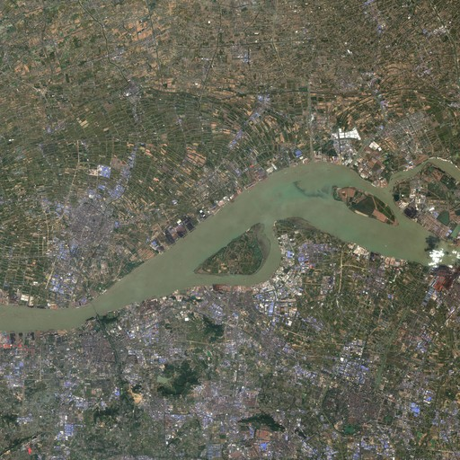
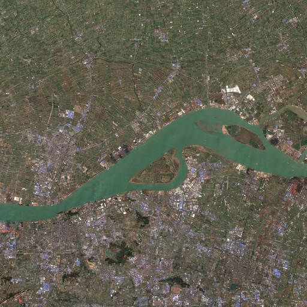
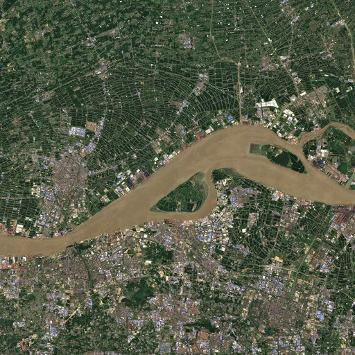
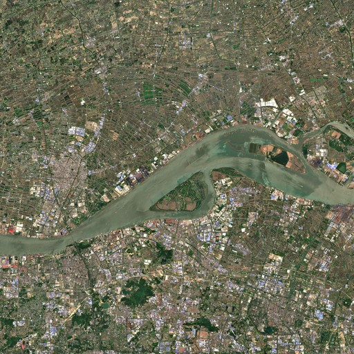
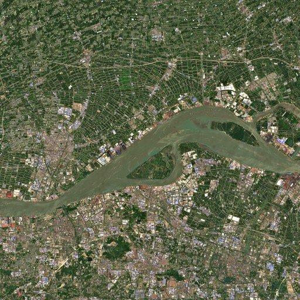
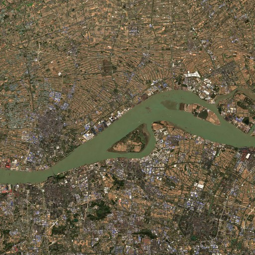
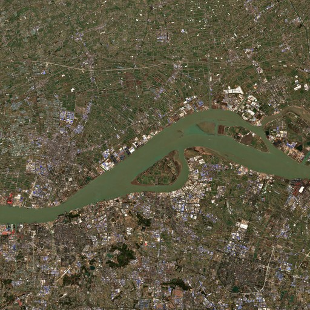

2017年 ☁1%
2017-10-31 | Sentinel-2 L2A | 10m/px

2018年 ☁1%
2018-02-23 | Sentinel-2 L2A | 10m/px

2020年 ☁0%
2020-09-05 | Sentinel-2 L2A | 10m/px

2021年 ☁0%
2021-06-22 | Sentinel-2 L2A | 10m/px

2022年 ☁0%
2022-05-03 | Sentinel-2 L2A | 10m/px

2023年 ☁0%
2023-11-24 | Sentinel-2 L2A | 10m/px

2024年 ☁0%
2024-02-12 | Sentinel-2 L2A | 10m/px
